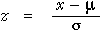

Distribution of z-scores
The process of subtracting the mean from a value, x, then dividing by its standard deviation is a common one in statistics and is called standardising x.
| standardised value, |  |
|---|
If X has a normal distribution, then Z has a standard normal distribution with mean µ = 0 and standard deviation σ = 1.
Probabilities for the standard normal distribution
Although there is no explicit formula that you can use to find probabilities (areas) for the standard normal distribution, Excel and most statistical programs can find such probabilities for you. Statistical tables can also be used to look them up (as will be explained later).
It is important that you can translate any question about a normal distribution into one about a z-score.
Weights of apples
The diagram below shows the distribution of weights of Fuji apples arriving at a packhouse. The distribution is normal (µ = 180g, σ = 10g).
Use the slider to translate apple weights, x, into z-scores.
The probability of a lower apple weight is translated into a probability about the z-score. The probability (area) is highlighted on the standard normal distribution of the z-score at the bottom of the diagram.
(We rely on the computer to evaluate the area under the standard normal distribution accurately!)
Examples
The diagrams below are templates that further illustrate the process of finding normal probabilities through z-scores.
Probability of lower value
The diagram translates the x-value into a z-value. The area to the left of this z-value on the standard normal probability density is the required probability.
Different values can be typed into the three text-edit boxes, so the template will find probabilities for other normal distributions.
Confirm that ...